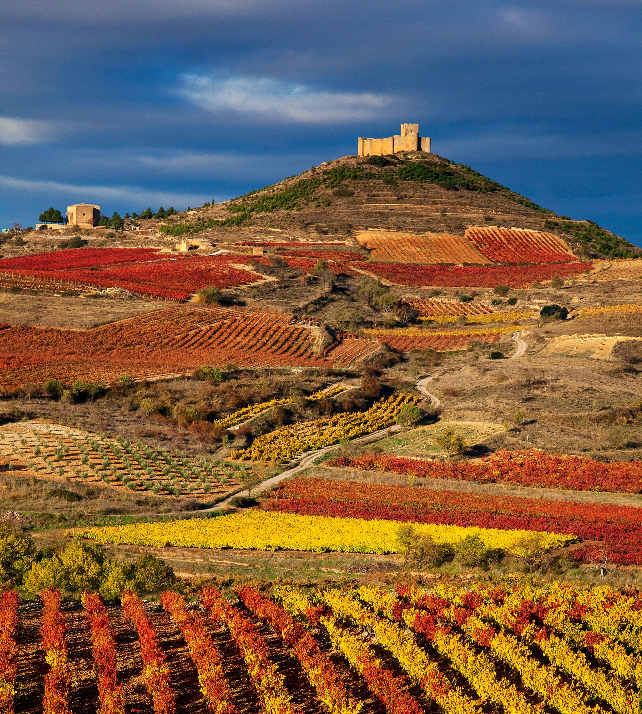

La Rioja - 18 de Febrero 2023

Grupo mínimo: 10 personas
Precio: 595 € Duracion:5 dias
El viaje incluye:
Autocar de lujo, incluyendo gel hidroalcohólico, 4 mascarillas / persona, 1 botella
de agua de 33 cl por persona / día.
Guía acompañante todo el circuito,especialista en el destino.
Audio guias para todas las visitas a pie y poder mantener más distancia entre
participantes.
Hotel **** los Bracos o simliar situado en Logroño.
3 desayunos buffet y 4 almuerzos con vino y agua incluido.
Seguro de viajes con anulación incluye Covid 19.
Itinerario:
DÍA 1. CATALUNYA - TUDELA - LOGROÑO - Presentación en los diferentes puntos de origen a primera hora de la mañana. Salida
hacia La Rioja. Atravesaremos Aragón y los Monegros y entraremos en la Comunidad Foral
de Navarra, hasta Tudela. Almuerzo. Por la tarde, continuación de la ruta atrave-
sando el valle del Ebro hasta llegar a Logroño, capital de la Rioja, donde realizaremos
una visita panorámica, resaltando su Catedral, llamada la “Redonda”, su pintoresco
centro histórico y diversos palacios de interés como el de Espartero. Finalizada la
visita nos dirigiremos al hotel. Alojamiento.
DÍA 2. LOGROÑO - HARO - BRIONES - SAN VICENTE DE LA SONSIERRA. - Desayuno. Salida por la mañana para realizar la llamada “Ruta del vino”, compartiendo
esta actividad gastronómica con el rico patrimonio de esta comunidad. Iniciaremos
el recorrido en Haro, lugar donde tendremos nuestro primer contacto con el vino visitando
también una de sus Bodegas, donde tendremos la oportunidad de realizar la degustación
de sus famosos “caldos”. Almuerzo. Por la tarde visitaremos el pequeño y pintoresco
pueblo de Briones, antigua ciudad-fortaleza y una de les más bonitas locaidades de
la Rioja, donde el tiempo parece haber parado en la época medieval, resaltando un
conjunto histórico y monumental espectacular. Seguiremos camino hacia lariojana villa
de San Vicente de la Sonsierra,conocida por la fiesta de los Picaos de Semana Santa,
el conjunto de su castillo y fortaleza y la iglesia románica de Santa María de la
Piscina. Regreso al hotel. Alojamiento.
DÍA 3. LOGROÑO - MONASTERIO DE YUSO - LAGUARDIA - LCIEGO - Desayuno. Por la mañana realizaremos la excursión al Monasterio de Yuso, considerado
como el Escorial de La Rioja, que cuenta con uno de los archivos más importantes de
España en lo que a historia medieval se refiere, fue declarado Patrimonio de la Humanidad
en 1997.Antes del almuerzo haremos un curso de cata en el centro enológico Villa Lucia
donde además de deleitar los sentidos, conoceremos algo de su historia en esta zona.
Almuerzo . Por la tarde, visitaremos la singular “Rioja Alavesa”, conoceremos la encantadora
e importante villa histórica de Laguardia,con un patrimonio arquitectónico y capital
la Rioja Alavesa. En esta amurallada calidad se encuentran dos destacadas bodegas
por su arquitectura y diseño. Bodega Ysios y Bodega Viña Real, diseñadas por Calatrava
y por Mazieres, a continuación nos dirigiremos a El Ciego donde el arquitecto Frank
Gehry,creador de verdaderas obras arte como museo Guggenheim, a construido el hotel
Marqués de Riscal, junto a las bodegas del mismo nombre. Regreso hotel. Alojamiento.
DÍA 4. LOGROÑO - BUJARALOZ - CATALUNYA - Desayuno y tiempo libre hasta la hora de iniciar el viaje de regreso. Almuerzo en
ruta. Por tarde iniciaremos la ruta de regreso nuestra ciudad. Llegada y fin del viaje.
Fin de nuestros servicios.